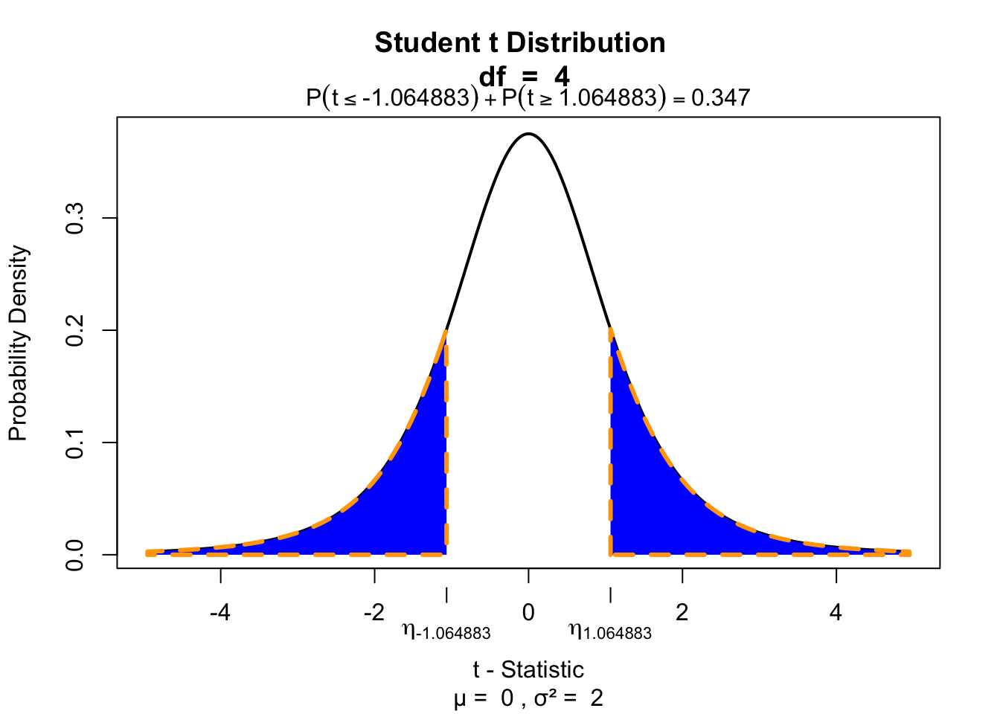

Paired-samples t-test
Paired 2 samples
Paired-samples t-test
In the Paired samples t-test the deviation (\(D\)) for each pair is calculated and the mean of these deviations (\(\bar{D}\)) is tested against the null hypothesis where \(\mu = 0\).
\[t_{n-1} = \frac{\bar{D} - \mu}{ {SE}_D }\] Where \(n\) (the number of cases) minus \(1\), are the degrees of freedom \(df = n - 1\) and \(SE_D\) is the standard error of \(D\), defined as \(s_D/\sqrt{n}\).
Hypothesis
\[\LARGE{ \begin{aligned} H_0 &: \bar{D} = \mu_D \\ H_A &: \bar{D} \neq \mu_D \\ H_A &: \bar{D} > \mu_D \\ H_A &: \bar{D} < \mu_D \\ \end{aligned}}\]
Data structure
| index | k1 | k2 |
|---|---|---|
| 1 | x | x |
| 2 | x | x |
| 3 | x | x |
| 4 | x | x |
Where \(k\) is the level of the categorical predictor variable and \(x\) is the value of the outcome/dependent variable.
Data example
We are going to use the IQ estimates we collected. You had to guess your neighbor’s IQ and your own IQ.
Let’s take a look at the data.
IQ estimates
Calculate \(D\)
diffScores <- IQ.next.to.you - IQ.youCalculate \(\bar{D}\)
diffScores <- na.omit(diffScores) # get rid of all missing values
diffMean <- mean(diffScores)
diffMean[1] 4.6And we also need n.
n <- length(diffScores)
n[1] 5Calculate t-value
\[t_{n-1} = \frac{\bar{D} - \mu}{ {SE}_D }\]
mu <- 0 # Define mu
diffSD <- sd(diffScores) # Calculate standard deviation
diffSE <- diffSD / sqrt(n) # Calculate standard error
df <- n - 1 # Calculate degrees of freedom
# Calculate t
tStat <- ( diffMean - mu ) / diffSE
tStat[1] 1.064883Test for significance
Two tailed
if(!"visualize" %in% installed.packages()) { install.packages("visualize") }
library("visualize")
visualize.t(c(-tStat,tStat), df, section="tails")
Effect-size
\[r = \sqrt{\frac{t^2}{t^2 + \text{df}}}\]
r = sqrt(tStat^2/(tStat^2 + df))
r[1] 0.4699753Confidence interval (bonus)
To display correct confidence intervals in SPSS we need to correct the original scores for whithin subject variation.
** SPSS SYNTAX
COMPUTE personal_mean = MEAN(nextIQ, ownIQ).
EXECUTE.
AGGREGATE
/OUTFILE=* MODE=ADDVARIABLES
/BREAK=
/total_mean = MEAN(personal_mean).
COMPUTE adjustment = total_mean - personal_mean.
EXECUTE.
COMPUTE nextIQ.adj = nextIQ + adjustment.
COMPUTE ownIQ.adj = ownIQ + adjustment.
EXECUTE.